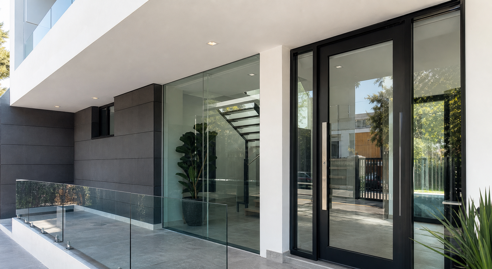

Puertas
Puertas de aluminio y cristal para accesos, interiores, locales y divisiones con cierre preciso.

La Piedad, Michoacan y alrededores
Fabricamos e instalamos puertas, ventanas, canceles, barandales y fachadas para hogares, comercios y proyectos a medida.
Alumglass combina medicion, fabricacion e instalacion para entregar acabados limpios, resistentes y listos para el uso diario.
Ver serviciosServicios principales
Puertas de aluminio y cristal para accesos, interiores, locales y divisiones con cierre preciso.
Ventanas corredizas, abatibles y fijas con perfiles durables y buena entrada de luz natural.
Canceles para bano, divisiones y espacios interiores, fabricados a la medida del area.
Barandales de cristal y aluminio para escaleras, balcones y terrazas con acabado profesional.
Frentes comerciales, vitrinas y fachadas de vidrio que mejoran visibilidad, seguridad y presencia.
Soluciones a medida para casas, oficinas, consultorios, locales y remodelaciones.
Proceso claro
Galeria
Explora trabajos reales por categoria. Cada imagen abre en vista ampliada para revisar acabados y detalles.
149 imagenes
Cotizacion rapida
Para atenderte mejor, incluye el tipo de trabajo, ubicacion y medidas aproximadas. Respondemos por WhatsApp o llamada.
Contacto local
Visitanos o escribenos para revisar tu proyecto de aluminio y vidrio.
Preguntas frecuentes
Tipo de trabajo, medidas aproximadas, ubicacion y, si tienes, fotos del espacio donde se instalara.
Si. Realizamos fachadas, vitrinas, puertas, ventanas y soluciones para negocios, oficinas y locales.
Atendemos La Piedad, Santa Ana Pacueco y alrededores. Escribenos para confirmar cobertura segun tu ubicacion.
Si. Cada proyecto se revisa por medidas, uso, materiales y condiciones del lugar.